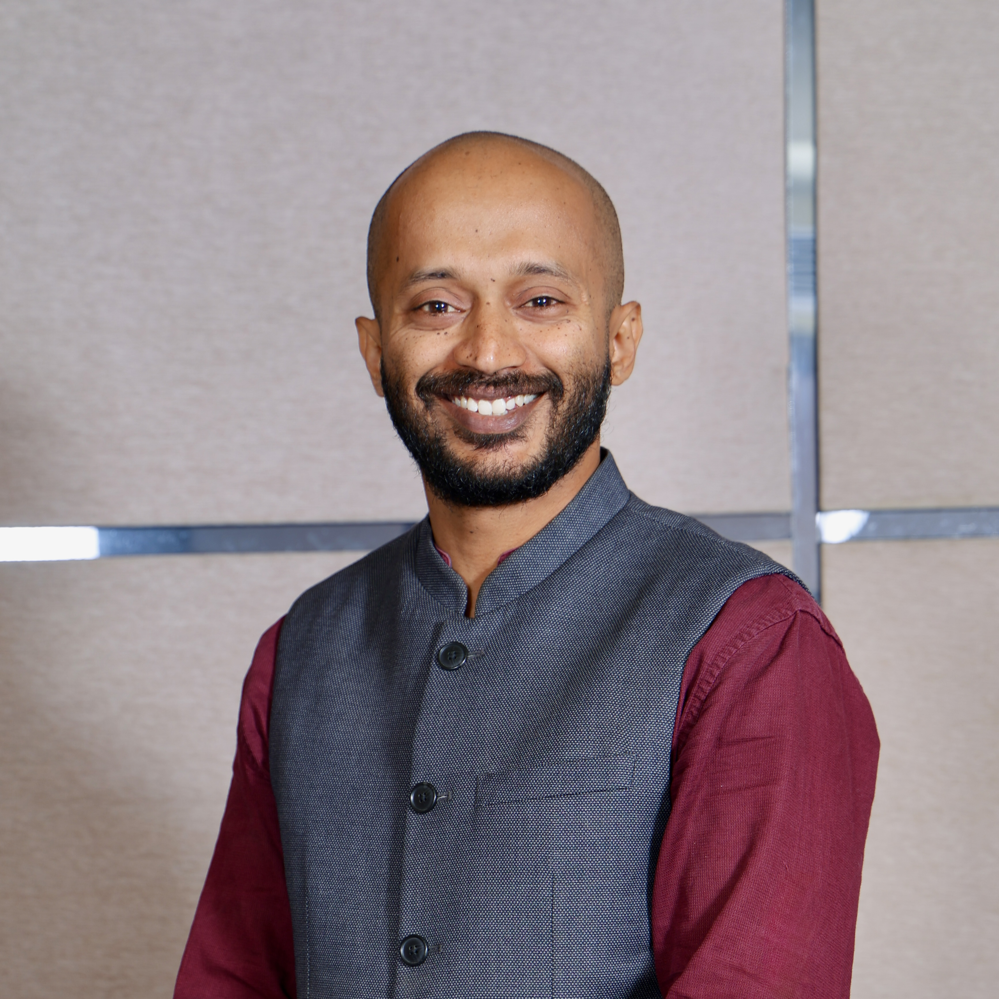

Bridging the gap between theory and practical application through our core educational offerings.
Highly specialized, individualized tutoring sessions focused intensely on Mathematics and Science. Our expert teachers adapt to each student's unique learning pace, ensuring deep conceptual clarity aligned with their specific board syllabus.
We don't just teach students; we empower ecosystems. Logic League conducts immersive, hands-on workshops designed to inspire students and equip teachers with modern STEM pedagogical tools and classroom engagement strategies.
We assist schools in building robust STEM programs from the ground up. This includes setting up practical STEM labs, assessing infrastructure needs, and training teachers to effectively deliver hands-on science and math education to their classrooms.
We build hyper-personalized digital learning systems. Our diagnostic assessment platforms analyze the logic behind incorrect answers, generating targeted remediation plans that help students master fundamental rules rather than just memorizing answers.
We have extensive experience partnering with NGOs to deploy corporate social responsibility (CSR) funds where they matter most. We specialize in bringing STEM infrastructure to Government and Affordable Private Schools.
Beyond our in-school initiatives, we proudly operate an affordable after-school STEM program in Hoskote, extending our reach into surrounding rural villages near Bengaluru.

A native of Hoskote, Bengaluru, I completed my education in Biotechnology from St. Joseph's College of Arts and Science.
With 17 years of dedicated experience in the education sector, my career began directly in the classroom. Over the years, I have had the privilege to teach math and science, spearhead the establishment of new schools, transform existing educational institutions, and train teachers across 10 states in India to embed STEM as a core culture within their classrooms.
Today, I co-direct Logic League alongside my schoolmate, Prashanth Kumar, an experienced technology professional. Together, we serve a diverse student base across four countries. I also actively engage with the BNI network to build strategic partnerships with professionals who share our vision of making high-quality education logical, accessible, and profoundly impactful.
Whether you are a school seeking STEM program setup or a stakeholder interested in the future of education, we want to hear from you.